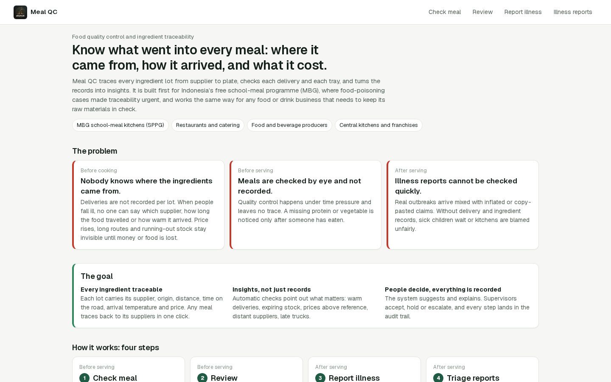
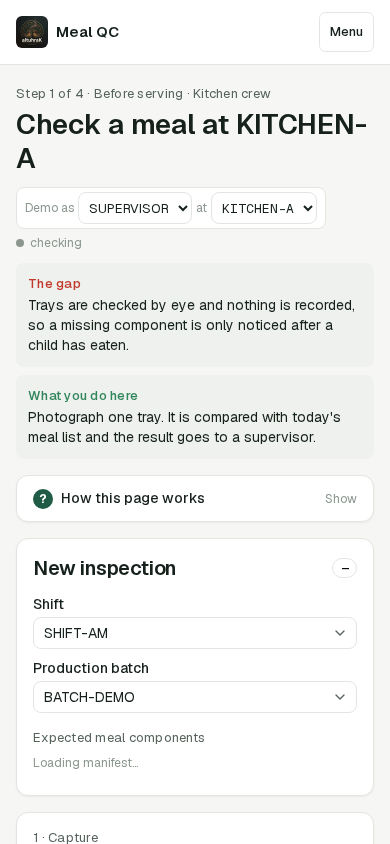
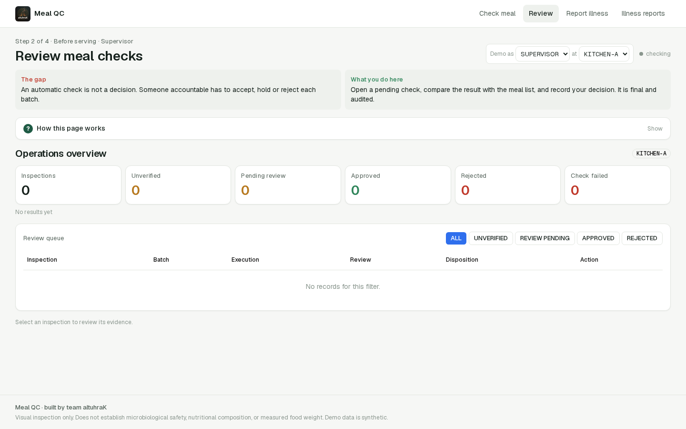
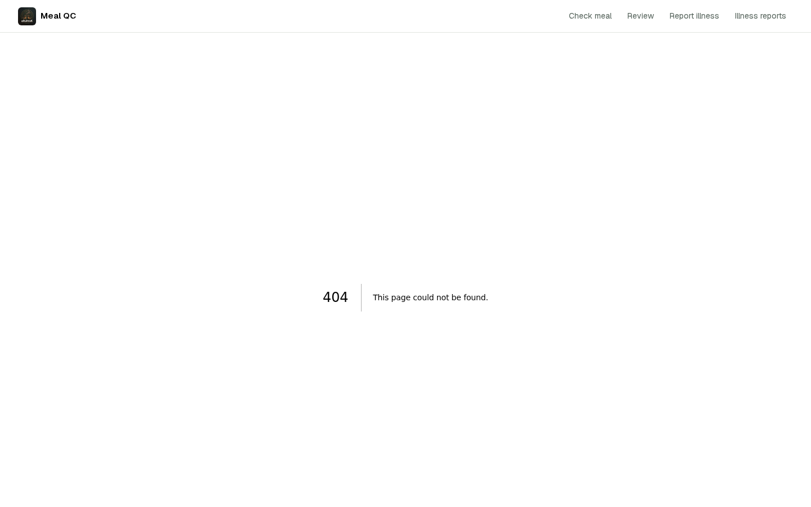
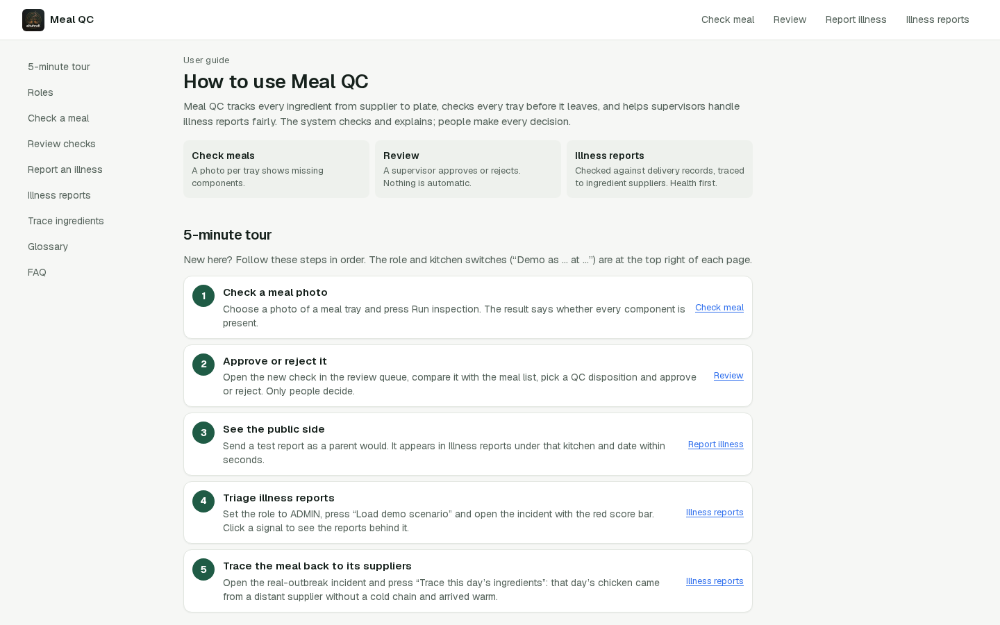
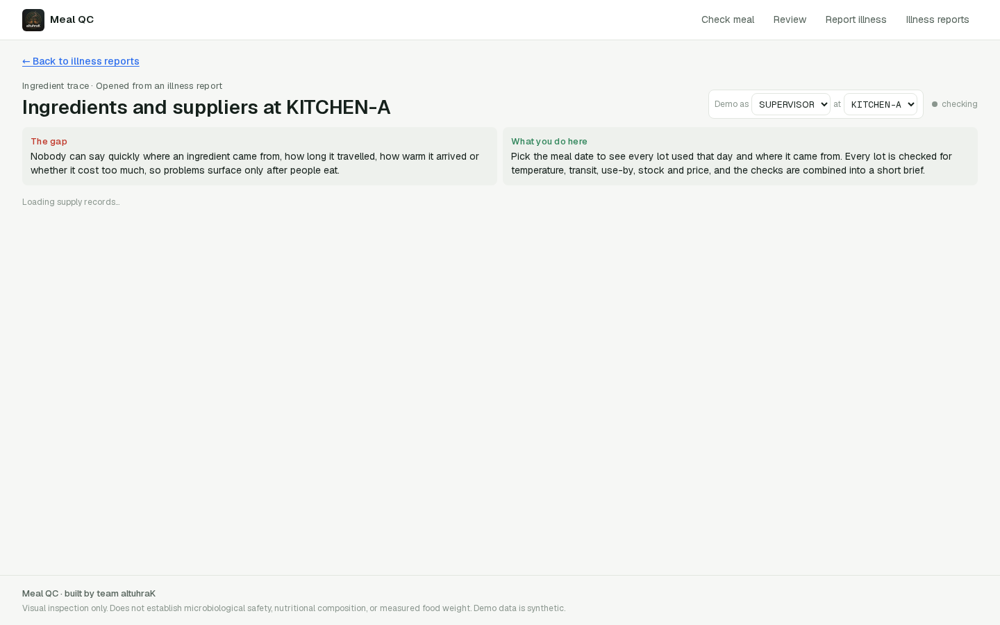
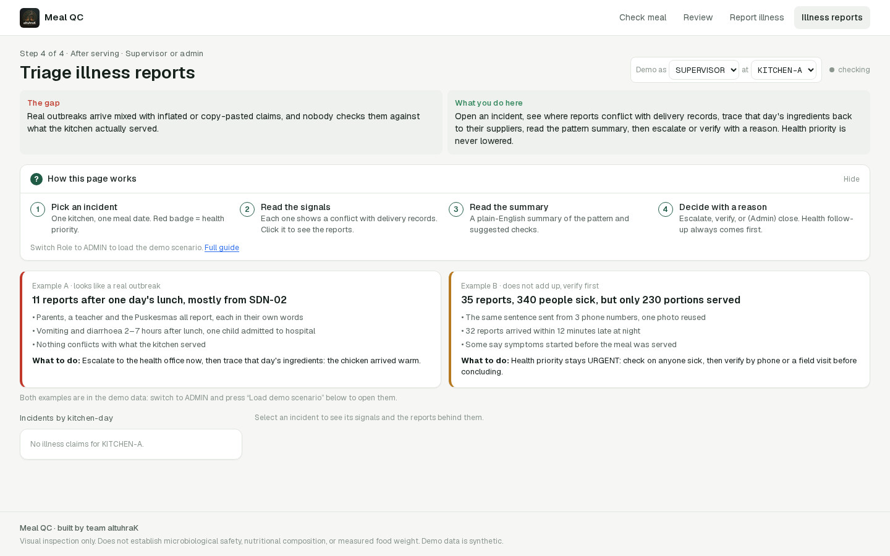
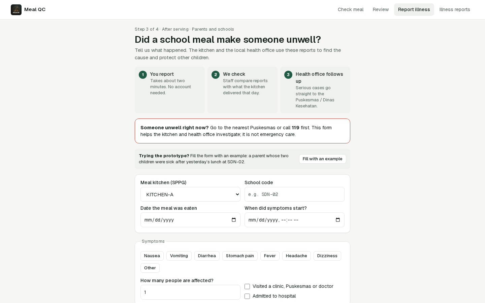

Kontrol kualitas makanan dan pelacakan bahan untuk program MBG — dari foto tray hingga laporan sakit, dengan AI yang investigate, bukan sekadar dashboard.

Halaman utama dengan 4 jalur: Crew (capture tray), Guide (panduan), Supply (pelacakan bahan), Claims (laporan sakit). Semua traffic melewati proxy server-side.

Kamera belakang, canvas grab, validasi 320×240 minimum. Mode baseline vs AI (Gemini multimodal). Idempotency key per layar. AI hanya prediksi — bukan label, bukan persetujuan QC.

6 KPI tile, strip provenance (Model vs Baseline), filter chip, tabel review. AI prediction ditampilkan UNVERIFIED sampai human approve. Crew tidak bisa approve — enforce di backend.

POST /api/agent/investigate menjalankan tool calls: get_model_summary, get_gold_status, list_inspections, propose_action. Setiap run disimpan ke agent_run collection dengan reasoning trace + cost. Proposed action butuh /confirm.

Dokumentasi in-app untuk crew dan supervisor. Menjelaskan alur capture → review → report, serta batasan scope (visual presence only, bukan bukti keamanan pangan).

Setiap lot bahan mencatat supplier, origin, travel time, arrival temperature, price. Automatic checks flag warm deliveries, expiring stock, overpricing. Trace dari makanan sakit ke supplier.

Form publik untuk melaporkan sakit setelah makan. Dicek terhadap delivery records, discreening fraud. Gemini menjelaskan pola tapi tidak mengubah skor atau menutup kasus.

Rekap inspeksi, laporan sakit, dan audit trail. Setiap keputusan punya alasan tertulis. Export resmi dengan disclaimer. Audit rows append-only.
Orang yang memutuskan. Setiap hasil AI diaudit. confidence_score tetap null.
Gold dataset: 0 of 50. Accuracy: EXPLORATORY. F1: tidak ada. Confusion matrix: tidak ada. Karena tidak ada ground truth, kami tidak mengarang angka.
Pipeline siap. Collection belum dimulai. Status EXPLORATORY — bukan kegagalan, tapi kejujuran.